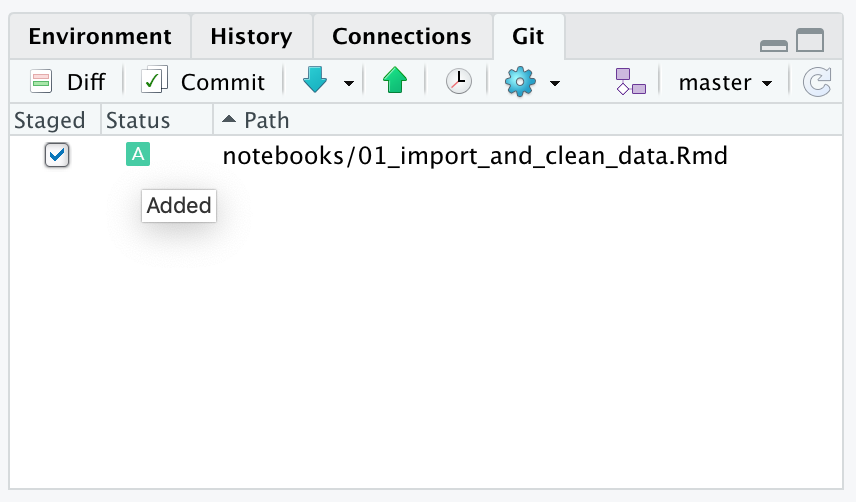
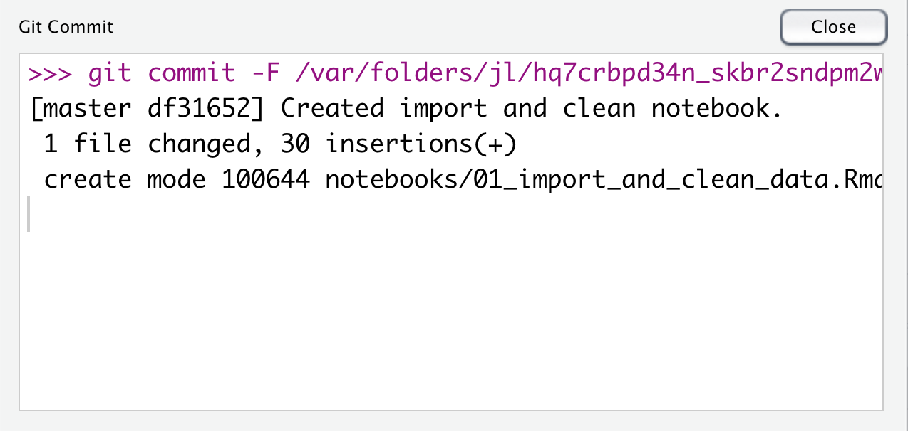
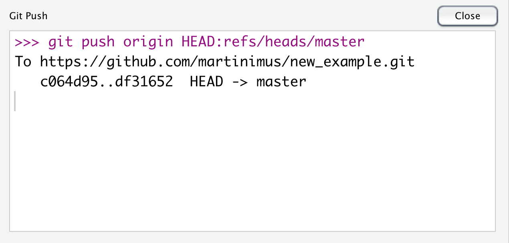

Chapter 7 GitHub and RStudio
7.1 Objectives
- Link an RStudio project with GitHub
- Create and edit files in RStudio
- Commit and push changes to GitHub
7.2 Using GitHub from RStudio
Although you can do more or less all the version control aspects via the GitHub website, this is not very convenient when you are working on your R projects. Now you have an idea of how the GitHub workflow works, we can start to integrate these version control concepts with RStudio.
7.2.1 Linking Git and RStudio
To use Git from within RStudio you need to make sure that Git can be found by RStudio.
If you haven’t done so already, make sure to go to: Tools > Global Options > Git/SVN and check that ’Enable version control interface for RStudio projects` is enabled. Also, check that the path to Git is present and correct.

7.2.2 Starting a new project under Git control
If you want version control of your R project, you need to make sure that the project is under control of Git.
The easiest way to start this is by creating a new project that is linked to an existing GitHub repository.
We can link a new project to the GitHub repository that we generated previously. To do this, we need to copy the URL for this repository. To do this, you have to go to the repository page and click on the Clone or download button. You can then copy the URL as shown below:

Next, we need to create a new project. Go to File > New Project > Version Control > Git.


In Repository URL paste the link to your GitHub repository.
Give the project a name (avoid spaces and try to use a meaningful name) and tell RStudio where to save it.

It is useful to tick the Open in a new session box, so that your project opens in a new RStudio session. That way RStudio opens a session with a clean environment.
Your project will open and your RStudio session should now have an extra tab in the top right corner (where your Environment is), named Git. This is where all the changes will show up as you work on your project.

These options can also be found by using the
 button in the toolbar. When you have opened a file and look at the options under this button it also enables you to find differences from the last commit (if there are any) or view the commit history of that file.
button in the toolbar. When you have opened a file and look at the options under this button it also enables you to find differences from the last commit (if there are any) or view the commit history of that file.

7.2.3 Changes and your remote repository
Let’s make some changes to our local repository, which is now under Git control. Here we are first creating a folder called notebooks and adding an R Markdown file named 01_import_and_clean_data.Rmd.
Once you have created the file you’ll see the folder appearing in the Git tab. When you tick the Staged box, the Status changes to Added. This means that Git is tracking your file and will include it in the next commit.


There are a few other icons that can appear in the Git pane, so here is an overview:
- , untracked file. Git has not seen this before and it needs to be added before changes are tracked.
- , added file. The file is now tracked by Git.
- , modified file. The file has been modified since the last commit.
 , deleted file. The file has been deleted since the last commit.
, deleted file. The file has been deleted since the last commit.
When we edit the file a bit we can see how it changed by clicking on the Diff button in the Git toolbar.
If we are happy with the changes then we can commit them. You can do this by pressing the Commit button in the Git tab and adding a commit message. All the files that are staged will be included in that particular commit. If there are files that you do not want to commit yet then you can untick them before pressing the Commit button.

To ensure that the changes end up on your remote repository you need to push the changes. To do this, press the Push button in the top right corner. RStudio will give you a message that the changes are pushed:

7.3 Exercise: Version control in RStudio
Exercise 7.1 To get us going, we need to have a repository to play with. You can either use the repository you’ve created previously, or create a new one:
- Create a new repository on GitHub
- Create a new R Project under version control
- Link the R Project with the remote repository
7.4 Exercise: Branching and changes
Exercise 7.2 Now we’ve got a project under version control we can practice what we’ll do if we want to create a new feature to our existing repository, but do not want to send that to the main branch (yet). To do this, we use the following steps:
- Create a new branch (e.g.
new_notebookor anything that describes the feature you’re adding) from within RStudio. To do this, use the following button in theGitpane: - Create a
notebooksfolder and save a new R Markdown file in it. - Ensure that changes to the new file are tracked.
- Make some changes to the file and commit them.
- Push the changes to the remote repository.